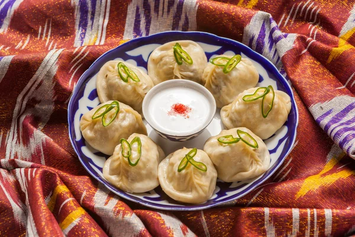

Manti

Description
Manti are traditional Uzbek dumplings filled with spiced ground meat, typically lamb or beef, and finely chopped onions.
These savory parcels are often seasoned with cumin, coriander, and black pepper, providing a burst of flavor in each bite.
Manti are usually steamed until tender and served hot, sometimes garnished with fresh herbs or accompanied by a dollop of yogurt.
They are a beloved dish in Uzbek cuisine, enjoyed for their rich taste and satisfying texture.
Ingredients
- 1 lb (450 g) lamb, cut into bite-sized pieces
- 1 large onion, finely chopped
- 2 large carrots, sliced into rounds
- 2 large potatoes, peeled and cut into large chunks
- 2 tomatoes, chopped
- 1 bell pepper, sliced
- 1 small cabbage, chopped
- 1 tablespoon tomato paste
- 4 cloves garlic, minced
- 1/2 cup vegetable oil
- 1 tablespoon ground cumin
- 1 teaspoon ground coriander
- 1 teaspoon paprika
- 1 teaspoon ground black pepper
- 1 tablespoon salt
- 8 cups water
- Fresh cilantro or parsley, chopped (for garnish)